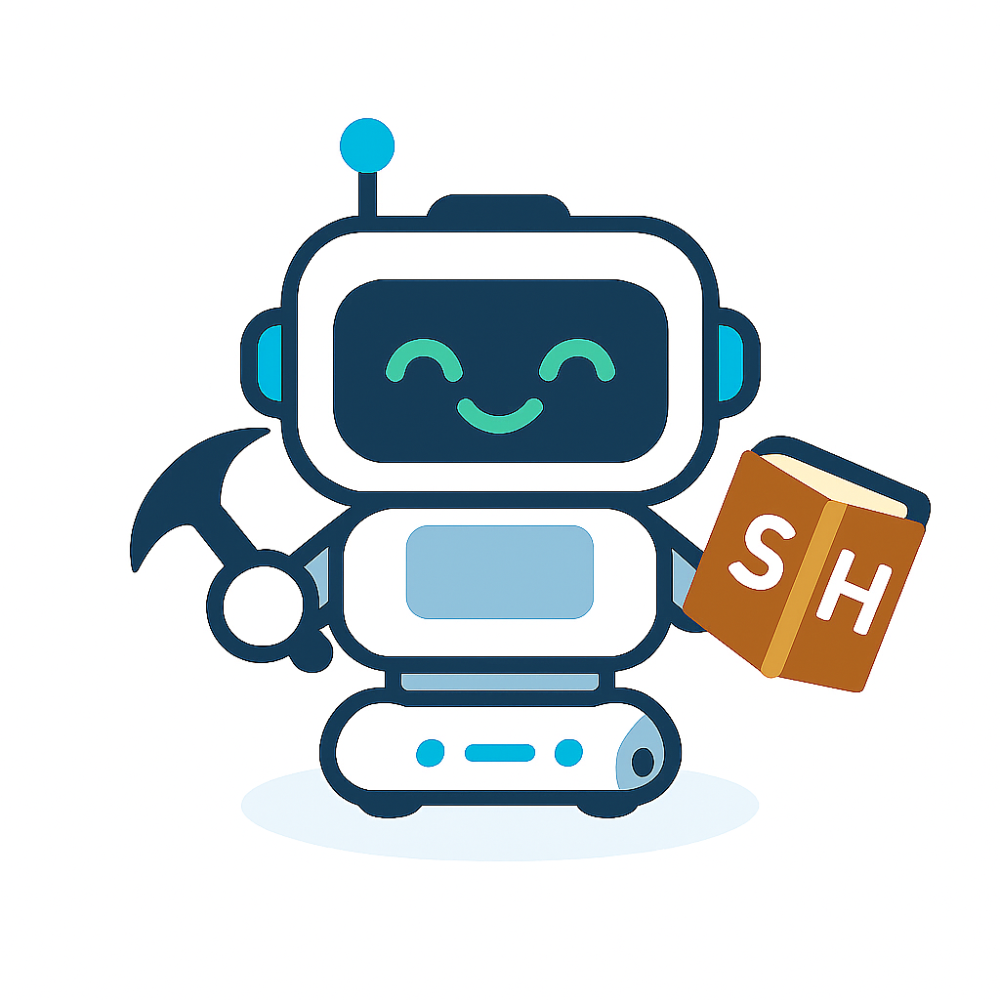
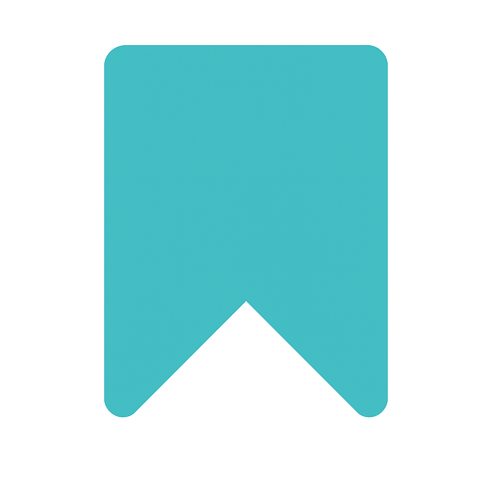

Step 1: Toioとつなげる
つなげる
次へ
Step 2: 言語を選んでね
English
Español
한국어
中文
Step 3: コースを選んでね
道案内コース
発音コース
動作と表現
ネイティブ
フレーズ集
次へ
Step 4: レベルを選んでね
かんたん
ふつう
むずかしい
次へ
Step 4: 動作と表現を学ぼう！
使える表現
🎙 Start
⏹ Stop
✓
Great!
正しく発音できました。
認識結果：
Try again!
正しく認識されませんでした。
認識結果：
Step 4: 発音を練習しよう！
以下の単語を声に出して練習してみよう！

🔈 読み上げ
🐢 ゆっくり
🎙 発音チェック
American English
📝 Open
フォルダ追加
Step 4: ネイディブフレーズ集を学ぼう！
← Browse
get a kick out of sth
put one’s money where one’s mouth is
✓
Great!
正しく発音できました。
Try again!
一部の単語が正しく認識されませんでした。
認識結果：
間違えた単語を意識して、もう一度文全体を発音してみましょう。
🎙 発音チェック
Step5 動かしてみよう！
使える表現
🎙 Start
⏹ Stop
✓
Great!
正しく発音できました。
認識結果：
Try again!
正しく認識されませんでした。
認識結果：
⬅ 戻る